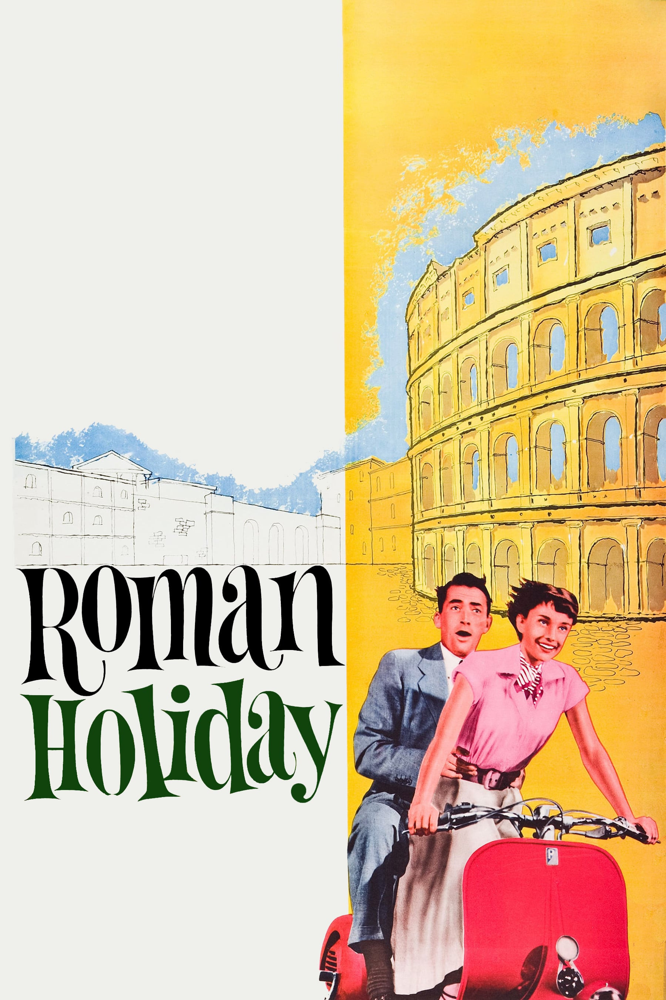
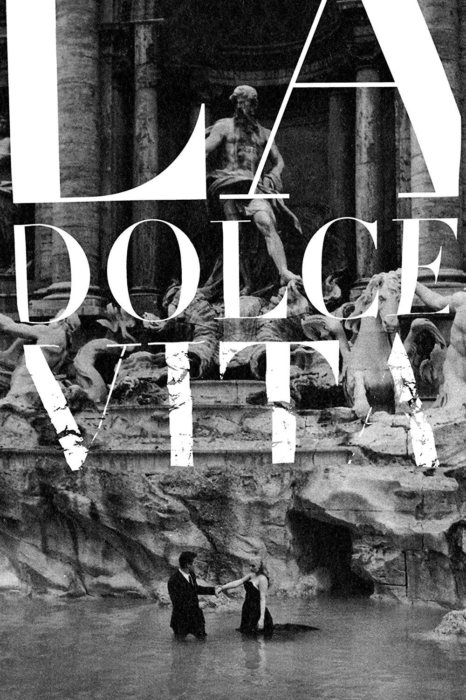
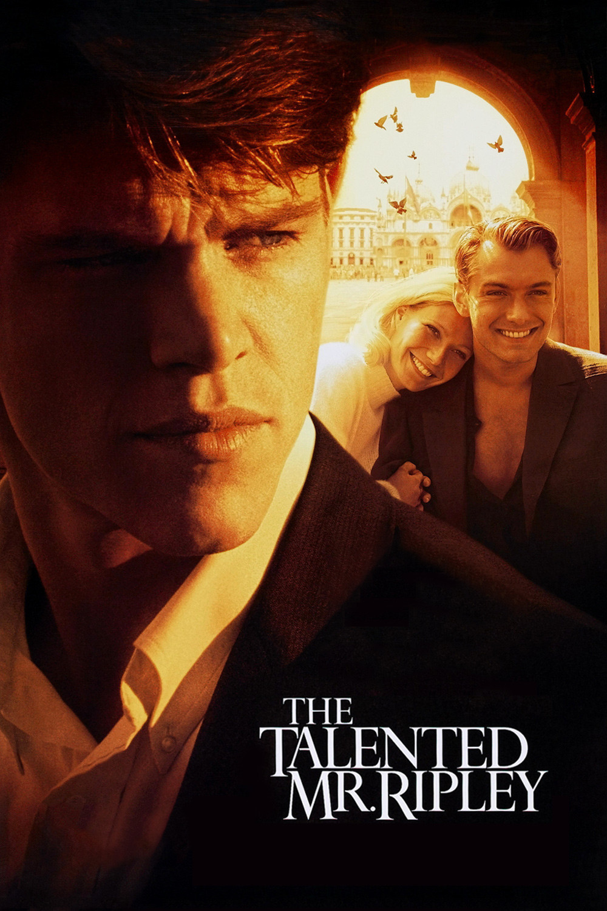
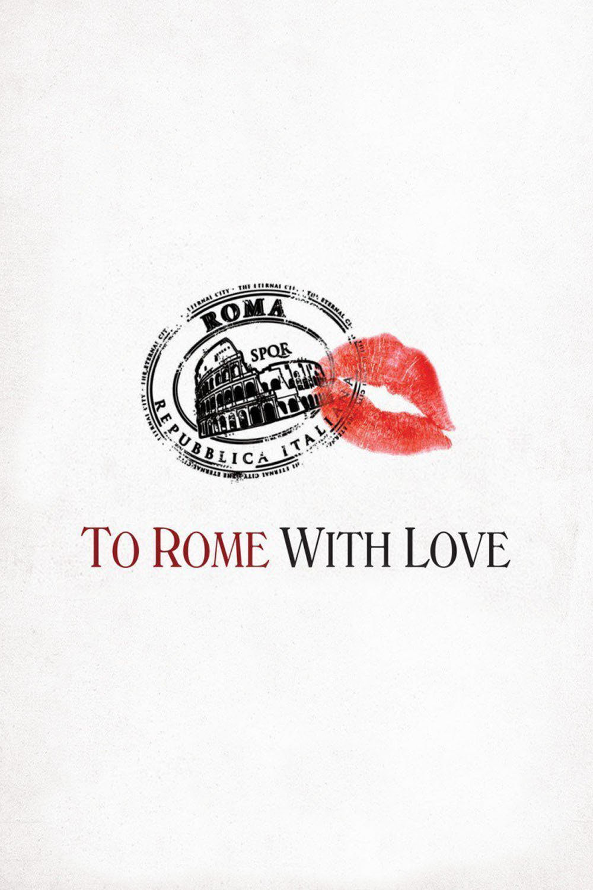
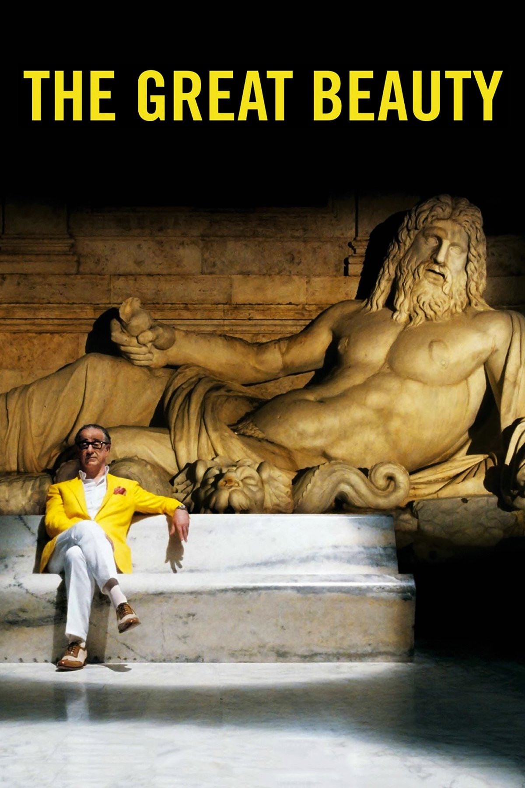
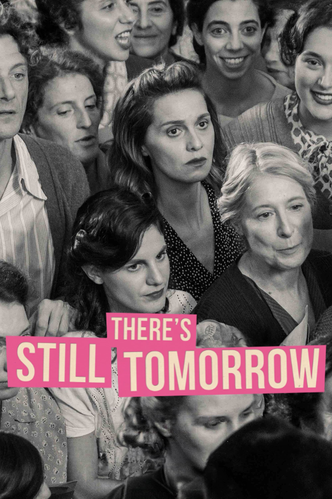
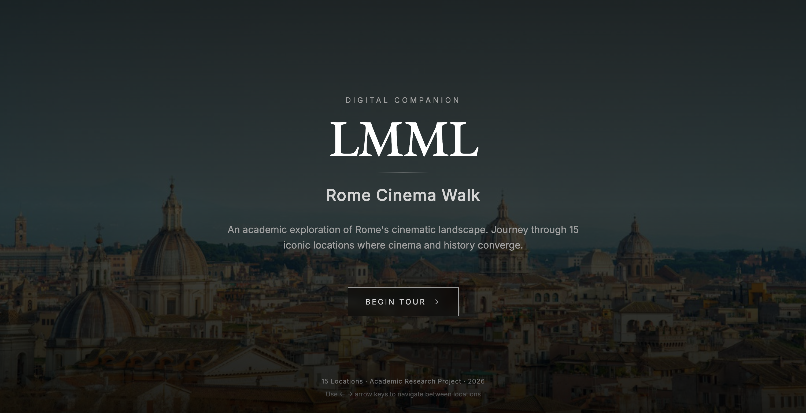
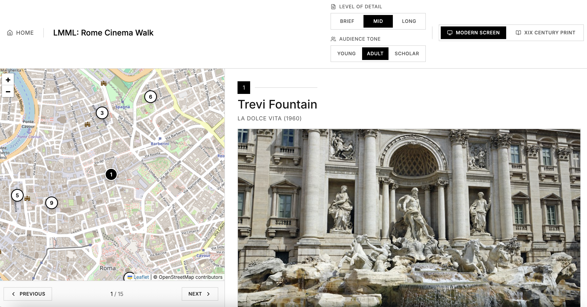
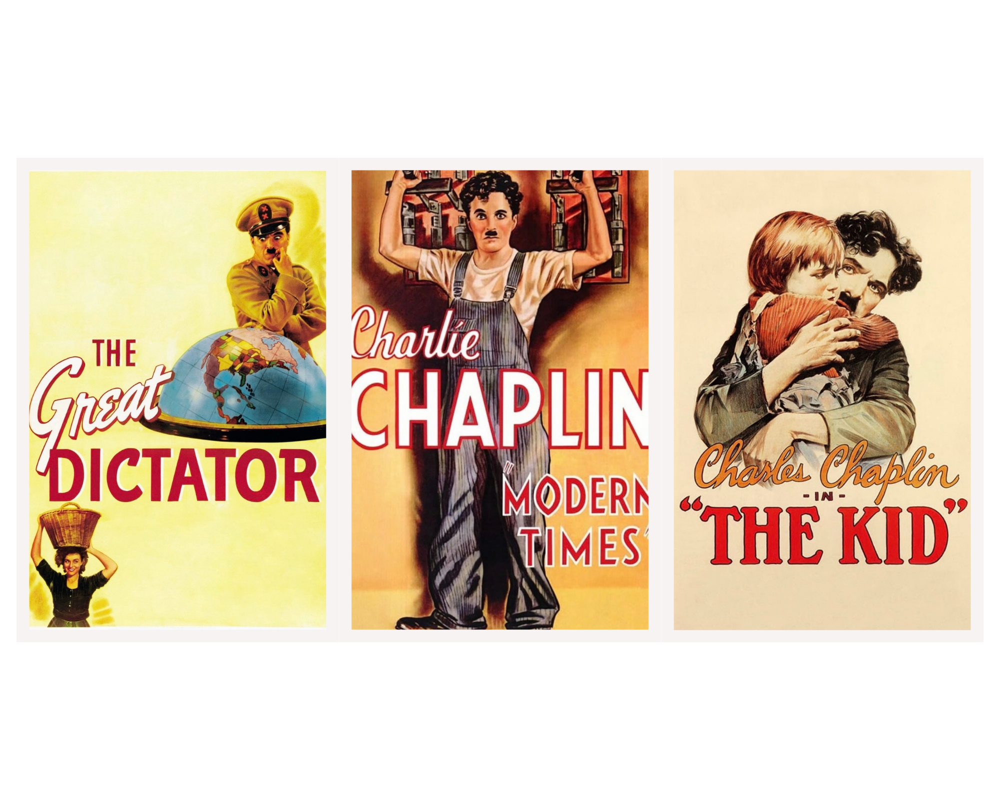

The Live Museum of Movie Locations (LMML) — Rome Cinema Walk is an interactive web application that explores the cinematic geography of Rome. Developed for the Information Modeling and Web Technologies course in the Digital Humanities and Digital Knowledge (DHDK) Master's degree program at the University of Bologna. The project chooses Rome, the city deeply beloved by both group members and by the artists across time, as the starting point to examine how physical locations interact with cinematic scenes. By interweaving physical topography with narrative film history across 20 monumental landmarks and 6 iconic films (spanning 70 years from 1953 to 2023), LMML provides an educational, multi-layered journey that caters to children, adult tourists and academic researchers or cinephiles.
What the site contains. The application is a static site including one landing page, one tour application, one stylesheet, and two JavaScript modules — with no build step and no server-side dependency. It offers three ways to engage with the material: a Map Overview that lays out all 20 locations on an interactive Leaflet map with a photographic filmstrip index; an Interactive Tour that walks visitors through each location one at a time along one of four curated narrative routes, pairing a historical/technical profile with a synthesized narrative passage, a film still, and an on-site QR code for navigation; and a merged About page collecting the project's documentation, source disclaimer, and team credits. Four selectable visual themes and four selectable narrative routes recombine freely across all 20 locations, so the same underlying data can be experienced as a chronological history walk, a classic sightseeing itinerary, an art-and-architecture tour, or a film-location pilgrimage — each rendered in a visual language drawn from a different era of cinema history.
AI Disclaimer — use of LLMs. A large language model (Claude) was used as a development assistant throughout the project mainly in two roles: (1) coding assistance — iterating on the coding implementation, especially with the application of leaflet to build up the interactive map; (2) QR code generation — producing the Google Maps deep links embedded at each stop. The underlying research, the selection of locations and films, the information architecture, the metadata structure, and all editorial and design decisions were carried out and verified by the group members.
LMML is deliberately built as a lightweight, dependency-free static application rather than a framework-driven site, so that its structure stays legible as a teaching artifact. The codebase is organized into five files with a strict separation of concerns:
data-theme (visual era) and data-view (active screen), and three view panels — Map Overview, Tour, and About — are shown or hidden by CSS rules keyed to data-view.--t-* custom-property token system described in Section 5.state.narrativeId, active location index), the content-synthesis engine, map rendering, and event wiring.The application features a lightweight, zero-dependency client-side router: navigation never triggers a page reload inside tour.html, it only swaps the data-view attribute and re-renders the affected panel, while the narrative-route selection and theme selection are held as shared state so that choosing a route on the Home page, the Map page, or the Tour page keeps every view in sync. This keeps the whole application inspectable in five files with no compilation step, consistent with the project's brief of producing a clear, directly readable demonstration of information-modeling principles rather than a production framework build.
Featuring locations from

Roman Holiday

La Dolce Vita

The Talented Mr. Ripley

To Rome with Love

La Grande Bellezza

C'è ancora domani
The system operates on an object-oriented, highly structured unified metadata architecture defined in data.js. This data layer fulfills the strict Rich, Structured, Typed, and Uniform (RSTU) design constraints through two complementary layers:
LandmarksOrHistoricalBuildings, TouristAttraction) to creative works (Movie) and spatial actions (FilmAction), establishing the application as an open, machine-readable linked data node.Every fact recorded in data.js — coordinates, addresses, construction dates, opening hours, and film-appearance details — is grounded in a verifiable public source rather than invented. Location profiles are compiled chiefly from Wikipedia entries for each landmark, cross-checked against official tourism and municipal listings; film-appearance details (director, year, scene description, filming locations) are compiled chiefly from each film's IMDb "Filming Locations" page. The complete, file-by-file reference table — all 20 location sources and all 6 film sources — is published in the Disclaimer section of this page, immediately below.


Refinements over the original Figma prototype. Some changes were made to the initial design during implementation. First, the Home page was expanded from a single "Begin Tour" entry point into two distinct interactive options — Map (browse all locations freely) and Tour (follow one of four narrative routes) — so visitors commit to how they want to explore before ever leaving the landing page. Second, the content-level controls (Level of Detail, Audience Tone, Competence Level) were moved out of the top header and relocated inline within the content pane itself, next to the text they affect. This keeps the top This keeps the top navigation bar brief and user-friendly, while the specific reading controls live beside the content they control, making both the global navigation and the content reading experience easier to scan.
Every screen in the application shares one layout discipline: avoid default browser scrolling in favor of a strict 100vh viewport constraint canvas, divided into dedicated, isolated scroll zones that behave like a native app rather than a document. How that discipline plays out, and how a visitor moves between screens, differs by page:
index.html): A single full-bleed hero screen — background photograph, logo, title block, and a route-picker form offering either "Map" (browse freely) or one of four narrative routes via a dropdown. Selecting an option updates the "Begin Tour" call-to-action's destination live, so the visitor commits to a starting mode before the single click that enters the application.38.2% given to a map pane (showing the current stop with Previous/Next controls and a position counter) and 61.8% to a scrollable content pane. Within the content pane the vertical flow is fixed across every location and every theme: Location Profile → Featured In (film still + flipbook, for multi-film locations) → the synthesized Three-Axis narrative passage → On-Site Practicalities (Google Maps QR code). On mobile, the two panes stack vertically instead of splitting horizontally. Users arrive here either directly from the Home route-picker or by picking a stop from the Map Overview, and move forward with Previous/Next, the on-screen counter, or by switching narrative route from the header dropdown at any point without losing their place in the underlying data.Across all pages, the main navigation bar (logo, Home/Map/Tour links, the About dropdown, and the Narrative/Theme dropdowns on the right) stays persistent and in sync: changing the narrative route or the visual theme from anywhere immediately re-renders the Map and Tour views without reloading, so a visitor's place in the tour, their chosen route, and their chosen theme are preserved as they move between Map, Tour, and About.
The visual design does not mimic architectural eras, but rather celebrates the aesthetic history of world cinema itself. Driven by a single CSS Custom Property token architecture (--t-*), switching themes instantly recalculates typography, aspect ratios, color palettes, card frames, and map cartography:
Rooted in German Expressionism and early silent cinema. Characterized by extreme chiaroscuro contrast, pure black-and-white canvas, thick 3px brutalist bounding lines, zero corner radii, and a high-contrast B&W map tile filter. Stills adhere strictly to the classic 1.33:1 (4:3) Academy Ratio, and screenshot filters are completely disabled to preserve original production framing. Typography is set in IM Fell English.

Inspired by vintage Hollywood and Italian cine-posters (e.g., Chaplin's Modern Times and The Kid). Utilizes warm aged-paper backgrounds (#eedc9a), rich scarlet accents (#d32215), heavy ink borders, and hard-edged 6px drop shadows. Stills are framed in 16:9 widescreen. Metadata tables are styled like vintage poster billing blocks, pairing bold condensed Oswald with elegant Dancing Script signatures.
Drawing inspiration from French New Wave (Godard, Truffaut, Varda) and 1960s pop-art street poster collages. Features high-saturation primaries (Godard Red, mustard yellow, and cobalt blue), solid border frames with colorful offset shadows, and a saturated pop-art map filter. Stills adopt the standard theatrical 1.85:1 widescreen ratio. Typography pairs Oswald headings with clean Jost body text.
Reflects contemporary sci-fi, VR holographic interfaces, and deep space aesthetics (e.g., Interstellar, Avatar). Built on deep void black (#030407), glowing cyan neon accents (#00f0ff), and high-contrast translucent glassmorphic panels (backdrop-filter: blur(16px)). Stills stretch into the expansive 2.35:1 Anamorphic CinemaScope Ratio. Typography pairs monospace HUD telemetry (Courier Prime) with ultra-clean modern sans-serif (Inter).
The purpose of this web site is to explore various types of typographic and layout style for specialized tourist visits, as an end-of-course project for the "Information Modeling and Web technologies" course of the Master's Degree in Digital Humanities and Digital Knowledge of the University of Bologna, under the supervision of prof. Fabio Vitali.
The documents contained in this web site have been selected for their length and complexity from various sources. Their publication here is not intended to be an alternative to or a replacement for their original locations.
Copyright and related rights on the content remain with their original owners. Copyright on the typographic and layout choices are 2026 © LMML Team.
Developed for the "Information Modeling and Web Technologies" course at the Master's Degree in Digital Humanities and Digital Knowledge (DHDK), Alma Mater Studiorum – Università di Bologna.